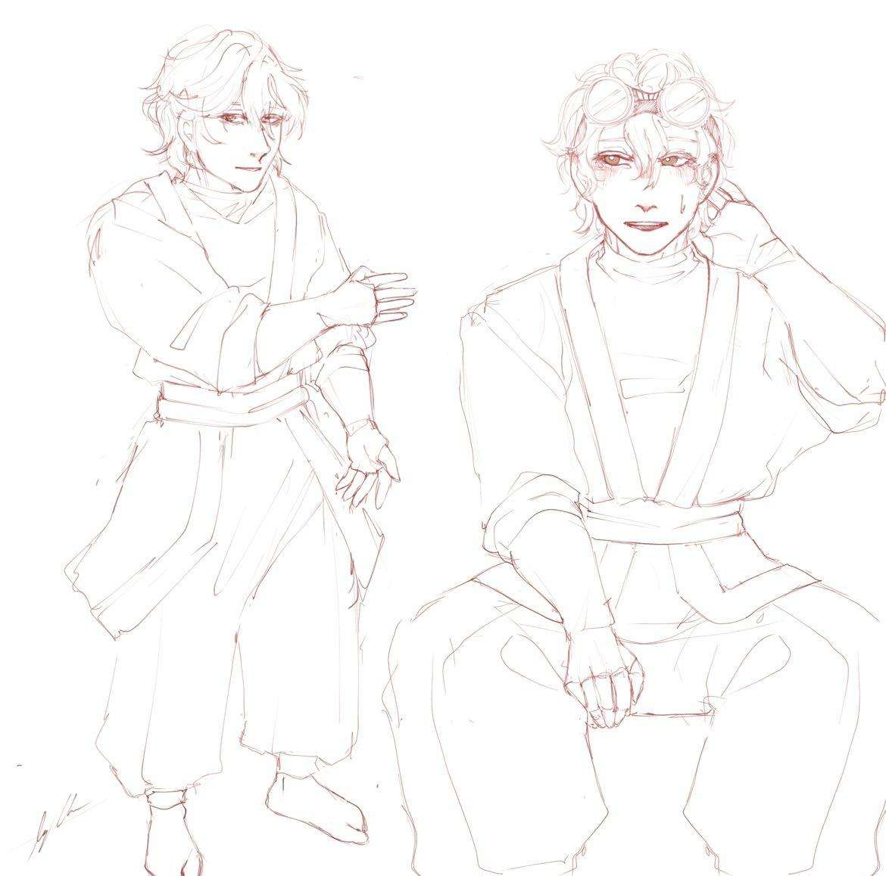

<<<<<<< Updated upstream
Kanyu
Kanyu types: Creation, enhancement, transmutation.
Known kanyu techniques: Fudo, Sakusei, Myuto
Abilities: 
Tetsuya creates a base suit of chainmail like fabric that enables him to create more specialized constructs like blades, hammers or some activate a different mode for a bit more gimmicky fighting style. A cool trick is that Tetsuya can actually create new limbs with this ability but they often lack precision as it needs more focus to operate them. In short this ability allows for strength and durability enhancement. 

Noroi’s armory act1: Street fight/
This mode focuses on basic fighting capabilities like kicking, punching and protecting himself, user can also create any weapon he wishes to make but the weapon can't separate from the user’s body.


Bash gauntlets/Grzmotołapy: Tetsuya can create a variation of gauntlets from normal ones that can stretch for better reach to big ones that have a lot more destructive power. the user can still choose if he wants to feel pain and touch in them but when he doesn’t they’re pretty clunky to operate. 


Leap Kicks/Koposkoki: Like “Bash gauntlets” Tetsuya can choose what kind of armor he wants to coat himself with and use it to either propel himself into the air or kick the enemy out of reach. Spikes can come from the sole for better gripping.

When kicking and punching turn out not to be enough, Tetsuya still has other techniques that change his way of fighting drastically. 

Buff ball
This is a very tanky mode that covers the user in thick armor and enables him to roll into a ball. This may sound like mobility in ball form is near zero but thanks to some creative thinking Tetsuya figured out a way to make it work. He uses an emission technique mixed with enhancement to propel himself through burst of aura coming out of layers of his shell that act as propelling engines that can either launch him or just make him move.


Reverse coating
This technique allows Tetsuya to use powerful energy blasts by turning his armor back into energy and using it for offense


Noroi’s armory act2: Elementalthrower 
When Tetsuya realized pure physical attacks aren’t always the best he created something more long ranged. In this mode his hands become two tubes from which elements of his choosing can shoot from if he mastered transmuting his aura into it. With basics he’s able to uncontrollably make it just shoot but with more training he can make more creative things. Additionally from his back he gets two large cannons that help him either fly by bending air or shoot by loading big chunks of the ground and propelling it. On his legs he creates tube-like boots that can do essentially what the other parts do but it really helps with flying or sticking to surfaces. The possible elements this mode uses so far are Air, fire, lightning, earth, magnetism.   

Noroi’s armory act3: Titan clasher/Buster
This is Tetsuya’s most powerful transformation where he combines all of his previous transformations and constructs and grows in size, becoming a brain of a giant mech. For this mode to fully function the user needs some kind of external battery to ensure stable and long duration of transformation when it grows more than 4 meters tall. In this mode everything is possible like wings, additional arms and even a tail to balance the mass
=======
<div class="character_card">
            <article>

            
                <div class="Metrica">
                    <h2>Name:</h2>
                    <h1>Tetsuya Noroi</h1><br>
                    Sex: Male<br>
                    Species: Human<br>
                    Age: 15<br>
                    Place of origin: Kurafuto<br>
                    Affiliation: Kyodai<br>
                    Skills: Blacksmithing, <br>
                    Weapon: Sword (and a bunch of other things)<br>
                    Goals: Explore the world and get a title of the greatest kyodai<br>
                    </div>
                                    
                <div class="Advanced, Metrica">
                    <article>
                        Advanced
                        Introduction (by the character itself): <br>
                        “Ayo Tetsu here. You know the future greatest kyodai in history.<br>
                        My philosophy for life is simple. Live fast, strike first and help<br>
                        whoever needs it. I know it may sound crazy but if I were gloomy<br>
                        all the time I couldn’t enjoy all the good things and would just <br>
                        get all cranky and hyper focused on perfection. Nah it ain’t me.<br>
                        I don’t give into pressure from my lineage. I create it!<br>
                        So beware everybody cuz here goes Tetsuya Noroi ready to fight<br> 
                        and solve mysteries of the past, future and present day<br>
                        
                        Backstory:
                        Tetsuya came to life in a well known Noroi family. Thanks to his heritage he was well known around the village mostly for being related to Zandaka the grand kyodai candidate. Tetsuya's parents really tried to keep him safe but the young rebel couldn't be tempered when he heard about Zandaka’s adventures. Boy’s parents gave up after a lot of convincing but they still think the job of a kyodai is not  perfect for his future. 
                        Character:
                        Character arc: Overcoming self doubt, learning that all that matters is little moments and not big ones
                        Goal for the character: be the main fucking character. Explore self doubt, generational pressure from his ancestors and lineage, generational tension and much more family related themes because even though they’re all linked by blood they’re not really all that connected.

                    </article>

                </div>
            </article>
    </div>
>>>>>>> Stashed changes
